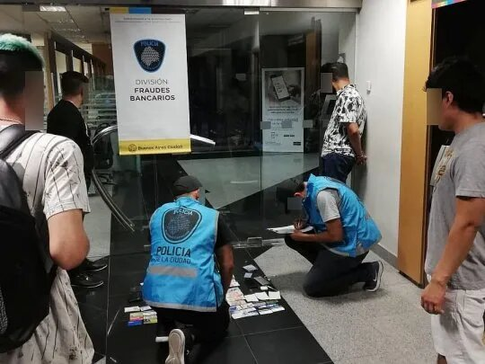

Menu de la Division
Inicio
Sustraccion de Identidiad
Phising
Skimming
Punto de compromiso
Contacto
Policia de la ciudad
Policia de la Ciudad
Division Fraudes Bancarios
Administracion
Se encarga de gestionar y administrar los distintos recursos, que son esenciales para el correcto cumplimiento de las tareas de la Division

Brigadas
El personal especisalizado es quien se ocupa de realizar las distintas tareas de campo, como asi tambien el cumplimiento de las distintas mandas que son ordenadas por el poder judicial.
Judiciales
Elementos con amplio conocimiento en la materia juridica, que se encontraba de evaluar, y responder todos los requerimientos judiciales, cooperando ademas con las distintas brigadas, desde la investigacion bajo la modalidad ingenieria social.